This highly detailed desk mat features 20+ furries peeing in all sorts of places. Each of the full scenes were sponsored by members of my community.

[ Secondary Design View ]

WildStrokes
This highly detailed desk mat features 20+ furries peeing in all sorts of places. Each of the full scenes were sponsored by members of my community.